![The Make view of Abliterator: the sound library on the left; the Engine panel with preset, a style box, Seed, Guidance, Temperature and Top-k knobs, a Speed knob with Tape, Stretch and Smear buttons, a waveform scope, left and right meters, Width and Spread knobs and a round stereo field scope; the Signal path panel; the Output section with knobs, switches, Dynamics LEDs and a tall OUT meter; the Model layers row with the Steer card (an XY pad and two dose knobs), Neuron with its cell drawing, Quantise with values in and out, Running Average with a trace, and a Scope; four effect cards, Tape with its drive meter and speed selector, EQ 8 with its curve, Pan with its position dot, and Plate; and the modulation sources with the LFO editor below. The top bar reads version 0.2.0, CPU load 12% and GPU load 91%](img/make.webp)
Overview
Abliterator is an instrument for vector bending: it changes the vectors a music model computes with while it plays, and you hear the change about a tenth of a second after you make it. What is Abliteration? says where the name comes from and what vector bending means for sound design, with demonstrations.
The default engine is Magenta RealTime 2 small, in 8-bit on Apple's MLX. MusicGen small (Meta) is a second engine, with Steer but without the model-layer units, and other models can be added behind the same engine interface. Everything on this page is Magenta RT 2 unless it says otherwise. Given a style prompt (“slow ambient drone, warm analogue pads, no drums”) and a seed, it writes a 40 ms frame of 48 kHz stereo audio at each step, reading what it has already played. Abliterator changes that step from inside in two ways:
- Steer adds a direction to the model's residual stream at layer 6, a dose of “brighter” or “darker”, “more pulse” or “beatless”, set on an XY pad. The directions come from pairs of prompts, written as editable Markdown.
- Model layers are Vector Abliteration Units placed between the model's 12 transformer layers: Lookback, Running Average, Tanh Squash, Quantise, Rotate, Abliterate and the rest. They act on the stream of numbers the model thinks in, not on the audio.
After the model come the things a synth has: auto level, an effect chain of up to eight (reverb, plate and hall, each of the last two with a 2020s, 1980s or 1970s colour, delay, chorus, drive, tape, pan, a three-band EQ, EQ 8 with a low and a high cut, filter, crush and de-click, in any order), a compressor and gate, stereo width, a low-pass, a limiter and a volume. Twelve modulation sources (three LFOs, three envelopes, two random sources and four macros) move the knobs while it plays, the units' and the effects' as well as the model's. A sound you like is saved as you heard it, with a recipe that replays it exactly, and goes to Session, where eight tracks loop and layer the saved sounds.
The signal path, sketched. Steer and the Model layers change what the model writes; the effects change the audio it has written. The waveforms here are drawn, not recorded. Steer and Model layers have the same switches on the Make panel, and a move of either is recorded in a saved sound's recipe.
Listen
Sounds saved from the instrument on this machine, made while it was being built. Each card shows the preset, its prompt, the seed and any model-layer units. These are the model's output before the effects; the instrument now saves a sound as it was heard, after them. The scope and the spectrum above the cards follow whatever is playing: your browser's own analysis of it where the browser allows that (Chrome, Firefox), or else its waveform and spectrogram, drawn when the site was built. Every sound on this site is a recording: a web page cannot run the model, which plays live only in the instrument on a Mac with Apple silicon.
Magenta RT 2 small, 8-bit MLX, 48 kHz stereo, on an Apple M5 with 24 GB. The model writes quietly (−28 to −41 dBFS), so for this page each sound is raised to about −20 dBFS with a limiter, and every sweep render in the figures below by the same 12 dB. MP3 at 160 kbit/s; the instrument saves WAV.
Make
Make is the instrument, laid out as a synth panel and compact enough to fit one laptop screen. Every knob sends while it turns. Press ▶ (or the space bar) and the model plays the preset; everything on the panel changes the sound from the next frame. Speed, beside the Engine's knobs, plays the model's sound slower, down to an eighth: Tape lets the pitch fall with it, as a slowed tape; Stretch keeps the pitch (a phase vocoder with locked phases); Smear keeps it and washes the sound out over third-of-a-second windows, after Paulstretch, for slow ambient. The model writes only as fast as its sound is used, and a saved sound replays its speed exactly. There are twenty-five presets in six groups (ambient, electronic, beats, acoustic, orchestral, experimental), or type a style of your own under the menu: the engine makes its tokens in about 90 ms and plays it, or switches to it while playing, and keeps it under Your prompts.

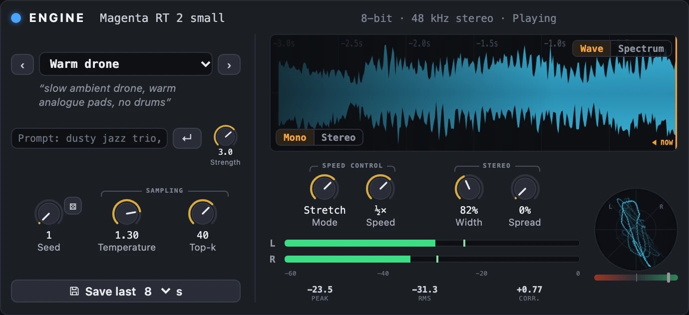


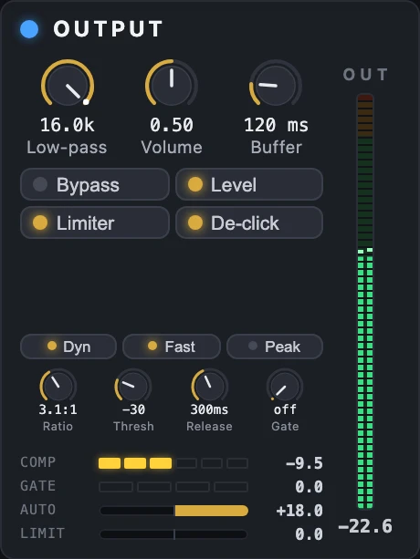


![The Effects panel between IN and OUT labels: Tape with a small row of drive cells, knobs for Drive 0.55, Wow 0.30, Flutter 0.10, Hiss 0.10 and Mix 1.00, and a Speed selector of 3.75, 7.5 (lit), 15 and 30; EQ 8 with a response curve over eight knobs and a Slope of 12 or 24 dB; a narrow Pan card with an L to R track and a dot, and knobs for Pan C, Auto rate 0.20 and Auto depth 0.35; Plate with Decay 2.5 s, Size 1.00, Pre-delay 10 ms, Damp 0.30, Mod 0.50, Mix 0.25 and Colour set to 1980s; then a dashed + to add another.](img/c-effects.webp)
 Zoom
Zoom

 Zoom
Zoom
How it works
Frame by frame
Magenta RT 2 is an autoregressive transformer over audio tokens. Each step it writes the tokens of one 40 ms frame, reading the frames it has written and a style embedding of the prompt, and a codec turns the tokens into 1,920 stereo samples. On an Apple M5 the small model takes about 25 ms a step, so it keeps ahead of real time with about 15 ms to spare.
The engine runs in its own process and keeps a few frames ahead of the sound card: the buffer, two frames (80 ms) by default. A move you make is applied to the next frame the model writes, and you hear it when that frame reaches the card. With two frames ahead and the card's own 22 ms, that is about 102 ms; a measured move took 107 ms.
A shorter buffer answers sooner and drops out when a step runs long. The top bar shows GPU load, the time the slowest steps take as a share of the 40 ms frame (over 100% the model is falling behind), and CPU load, the share of the processor the instrument uses. When a frame is late anyway, the last block the card played goes on, mirrored so that it starts where the sound stopped, and fades out over 30 ms; the audio crossfades back in over 5 ms when it arrives, so a dropout is heard as a short dip, without a click. Saved sounds are taken from the frames the model wrote, not from what reached the card, so a dropout heard live is not in a saved sound. Freeze renders a sound again offline from its recipe.
Some settings make the model itself write clicks: bursts a few samples long that swing up and down, sometimes to full scale, and sound like a bad splice. Neuron pushed hard at one block does it, and so does Quantise at 6 bits (85 a minute on the Warm drone, none at 8). De-click, the first stage of the output section, finds samples that jump far above the local level and reverse direction from one sample to the next, and redraws each burst as a straight line between the good samples either side. It looks 64 samples (1.3 ms) ahead. With Neuron at ×14.45 on block 3, the steps heard above half the peak fell from 27 to 2; on clean techno, jazz and gamelan it touched 3 to 12 places in 45 seconds. It is on by default and has a switch in Output; sounds saved before version 0.1.4 replay without it.
Steer: a dose along a direction
A direction is made from pairs of prompts that differ in one quality: “bright airy ambient pad, high shimmering tones, no drums” against the same piece asked for dark, low and muffled. The engine runs both lists through the model and takes the difference of the mean residual streams at each layer. Steer adds that difference at layer 6, scaled by the dose, which is a share of the stream's typical size: a dose of 0.1 adds a tenth. The two shipped directions, Brightness and Pulse, are in backend/config/contrasts/ as editable Markdown.
On the Warm drone preset the brightness dose takes the spectral centroid from about 140 Hz at 0 to 1.8 kHz at 0.2 and 2 kHz at 0.4. Below 0 the centroid hardly moves and the level rises instead, by 15 dB at −0.2. Pulse's measured range is narrower, 0 to 0.05.
Model layers: units between the transformer layers
The model-layer units are Vector Abliteration Units. VAU names its Core units for what they do to the vectors, with a small v before the name (vLookback, vNorm Shrink) to mark them as vector effects; a unit's help gives that name, and its card the name without the v, in VAU's short form (Shrink for Norm Shrink, Average for Running Average, Clamp for Component Clamp). One unit has a name of its own here: VAU's Position Repeat is Frame Repeat, since on this engine its positions are 40 ms frames of sound, and its help gives VAU's name. A unit at layer 6 changes what layers 6 to 11 read. Steer is the first card on the row, fixed at layer 6, since it acts there in the same way: it adds a direction to the stream, scaled by the stream's size and the dose. In its old place at the top, the Signal path draws the route live, from the Engine through the twelve layers (Steer and each unit marked where it acts) and the codec, then as sound through the effects and on to the Output panel beside it. While the model plays, each card shows what its unit is doing, from 32 of the stream's values read going in and coming out at the unit's layer and the stream's size after against before: values listed for Quantise and Component Clamp, pixels for Sparsify, out against in for Tanh Squash, a trace for Running Average, gain LEDs for Norm Shrink, Band Shrink and Principal Bands, lit taps for Lookback, a lamp for each repeat in Frame Repeat, an arc for Rotate, and for Neuron a cell that swells and fires with the value it leaves in the neuron it changes most. A unit without a display of its own has a green light that breathes while it acts.
| Unit | What it does to the stream |
|---|---|
| Lookback | Adds the stream from a few frames back, with feedback |
| Running Average | Adds a decaying average of the earlier frames |
| Frame Repeat | Replays the stream of the frames just before over the last few of each run |
| Tanh Squash | Soft-clips each dimension, harder as the drive rises |
| Norm Shrink | Above a threshold, reduces the stream's size by a ratio |
| Band Shrink | The same, on three bands of principal directions separately |
| Component Clamp | Clamps the largest components at a quantile ceiling |
| Principal Bands | Scales three bands of the stream's principal directions |
| Quantise | Rounds the stream to fewer levels |
| Sparsify | Keeps each position's largest components and zeroes the rest |
| Rotate | Rotates the stream in the plane of two directions |
| Abliterate | Removes a direction from what attention and the MLPs write |
| Neuron | Edits named MLP neurons: scale, add, set, zero |
Each unit as a card on the Model layers row, at the defaults measured on this engine, with the display it shows while the model plays. The displays here are drawn from simulated readings, so the page could be captured without the engine. Scroll along the row; a name opens the unit's card, with its whole sweep to listen to.


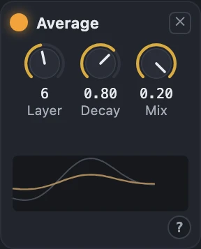

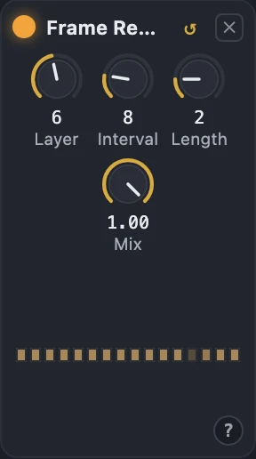

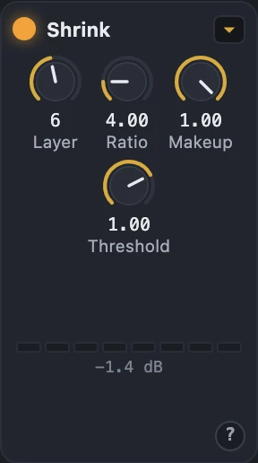

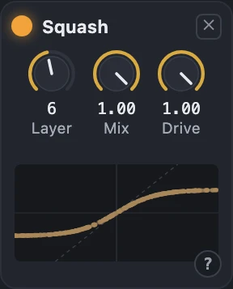

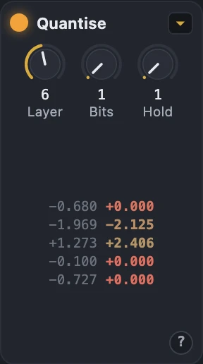


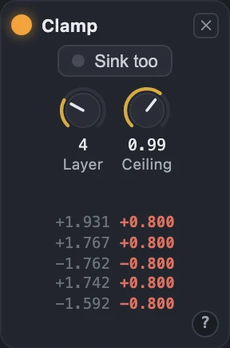


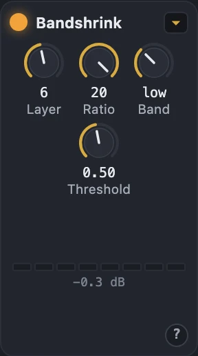

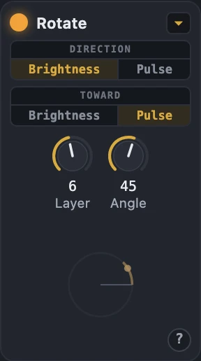

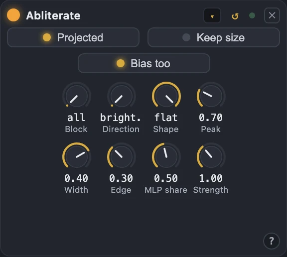

vMorph, the fourteenth VAU unit, needs texts to fit itself to and is not offered yet. The units' code is PyTorch and the model runs on MLX; a bridge hands each unit the stream at its layer for the one position being written, and hands back the change. Each crossing makes the GPU wait for the CPU, so Neuron and Quantise, which act value by value, run as MLX versions of the same arithmetic instead, checked against VAU's own units: Neuron in all twelve blocks now adds under a millisecond to a step, where the bridge added nine.
Model layers has a page of its own: where the units' code lives and how Abliterator hosts it, a diagram of where each unit acts inside the model with its measured placements, a card for each unit with a drawing of what it does and its whole sweep to listen to, and the scope.
Effects: after the model
The effects act on audio the model has already written. They are written for this instrument in numpy and scipy, and each gives the same output whatever block size it is fed: 512 samples live, a 40 ms frame offline, a whole file in a test. The reverb is a feedback delay network of eight lines with a Householder mix and four allpass diffusers before it, after Signalsmith's “Let's write a reverb”. Delay has a low-pass in its loop and a ping-pong switch; chorus reads two modulated delays in quadrature; drive is gain-matched tanh with a tone filter; EQ and filter are RBJ biquads; EQ 8 is a Butterworth low cut, six bells at 60 Hz, 150 Hz, 400 Hz, 1 kHz, 2.5 kHz and 6 kHz, and a Butterworth high cut, the cuts 12 or 24 dB an octave; crush reduces bits and sample rate; Tape is a tape machine's colour written for this instrument, saturation through a slightly lopsided curve gain-matched at the model's usual level, wow and flutter from a delay line whose length wobbles, a head bump and treble roll-off set by the tape speed (3.75 to 30 inches a second) and hiss; Pan is an equal-power balance with an auto-pan; De-click is the output section's de-click as an effect, with a sensitivity and the longest burst it redraws, so it can sit before a reverb. The chain runs from IN to OUT in one row that scrolls sideways; a + in the gap between two effects adds one there, and the light in the panel's header bypasses the whole chain with a 20 ms crossfade. Filter and the two EQs draw their response curves, and Drive has a small meter of how hard its curve is driven, with a CLIP mark.
Musical knobs
A synth such as Arturia's MiniFreak spends its knob travel where the sound is good. A model's controls do not come that way: a Steer dose of 0.4 overdrives the Warm drone, a Lookback mix of 0.5 silences it. So every control was swept on several presets, each render measured, and each knob's travel shaped so that most of it falls where the sound holds.
- The sweep. Each control at a range of settings, everything else at its default: 260 renders on the four ambient presets for the engine's controls, and 725 six-second renders on two of them for the model-layer units' settings and placements. The other presets, and styles typed in, use these ranges until they have been swept too.
- The measures. Level, clipping, silence, spectral centroid, flatness, a long-term spectrum in 48 bands and spectral flux. A setting counts as broken if it clips more than 0.1% of samples, goes silent, drops 24 dB, overdrives above −12 dBFS, or turns to noise.
- The noise floor. A sampler that changes at all takes a different path from then on, so each preset was also played at its defaults on six more seeds. Seeds alone move the spectrum about 8 dB; a control's change counts only beyond that.
- The curve. The knob's ends are the measured safe range; 40% of its travel is shared out evenly over the steps and the rest by how far each step moves the sound beyond the seeds' spread.
Turn the knob (drag it, scroll over it, or use the arrow keys). Each step is a real three-second render from the sweep; the bars are its long-term spectrum and the line its centroid. Red marks the doses that broke on this preset; outside the lit arc, doses broke on another preset. With Full range off the knob keeps to the measured range, −0.2 to 1, and about half its travel lies between −0.05 and 0.15.
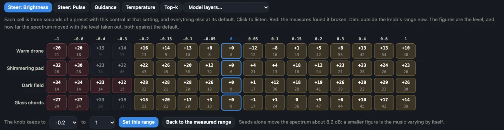
ZoomModulation
A link from a source to a knob has a send. Drag a source's tile onto the knob to link it; with the source selected, the knob shows the send instead of its value, and dragging it up raises the send, down lowers it, below zero turning the movement over. The source does not add to the knob's value. It moves the knob along its travel, so an LFO on Brightness swings through the calibrated curve and spends its time where the knob does: in the musical part of the range, slowing where the sound changes fastest.
Sources are functions of the frame's time. An LFO has five shapes, a rate, an amount (its amplitude, scaling every knob it moves), a phase, a symmetry and smoothing; each of the three envelopes rises and falls over the sound's length; a random source holds a new value at its rate and can glide to it. A recipe records the links, the curves and the sound's length, so a frozen sound replays its modulation frame for frame.
A Model layers unit's knob can be modulated too. The unit fixes its settings when it is attached, so the engine attaches it again whenever the source moves the knob by a step (a 512th of its travel), handing it the memory it had: Lookback's echoes carry on through the movement. Live play and a render do this at the same frames, and two renders of a modulated unit match bit for bit.
Session
Session is the other side: eight tracks of saved sounds. Drag a sound from the browser onto a track; click a clip to start it and again to stop it. A clip loops or plays once. Tracks play on their own stream beside the live model, so you can play the instrument over them.
 Zoom
Zoom

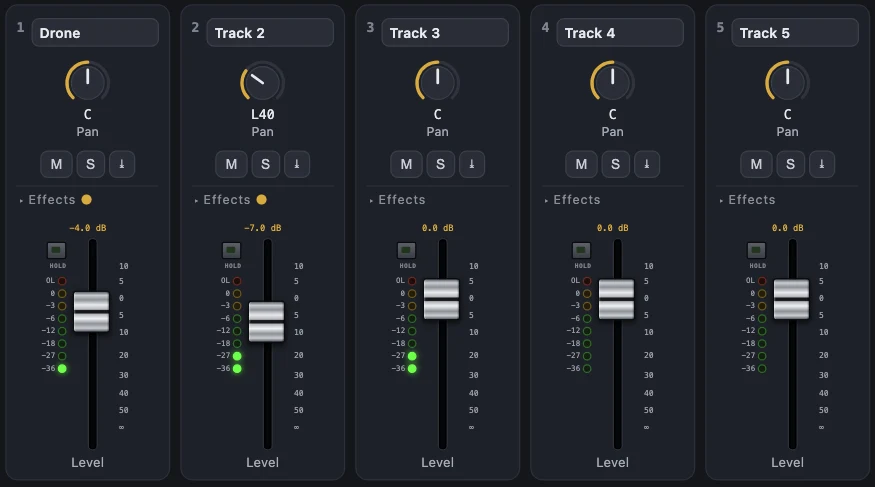
ZoomRabbit holes
Things the measurements turned up. The sounds are the sweep's own renders.
Lookback at VAU's own mix
delay layer=6 time=4 feedback=0.3 mix=0.5Lookback at VAU's default mix of 0.5, on layer 6, silences the music model: the Warm drone falls from −28 to −49 dBFS with 96% of its 40 ms frames silent. At 0.4 it reaches −60, and the Shimmering pad goes entirely silent. Above 0.2 every mix measured stayed mostly silent, so Lookback starts at 0.2.
A dose of −1
Brightness at −1 on the Warm drone clips 0.4% of its samples at −8 dBFS RMS, where the model's own level runs from −28 to −41. On the dark side the sound gets louder, not darker: from 0 to −0.2 the level rises 15 dB and the centroid stays between 80 and 140 Hz. The knob stops at −0.2.
As far as a seed
Guidance, Temperature and Top-k each move the spectrum about as far as changing the seed does. They change the music without moving its timbre in one direction, which is why they are not on the Steer pad.
A unit fixed at one setting
Lookback's time and feedback held up on both presets only at their defaults, 4 frames and 0.3. Every other value broke one of them. The knobs still turn, marked ⚠.
Principal Bands at layer 8
Principal Bands breaks the sound at layers 2 to 6 and holds at 8. The placement menu marks the layers that broke.
Brightness by numbers
On the Warm drone the centroid goes from 137 Hz at a dose of 0 to 942 Hz at 0.1 and 1.71 kHz at 0.15, then flattens near 2 kHz from 0.4. Most of the change is in the first 0.15, which is where the knob spends its travel.
Getting started
Requirements: a Mac with Apple silicon (Magenta RT 2 runs on MLX), Python 3.12, and uv or pip. The model's weights (about 2.9 GB) are not in this repository; magenta-rt keeps them in $MAGENTA_HOME, by default ~/Documents/Magenta.
git clone https://github.com/vector-lab-tools/abliterator
cd abliterator
./setup.sh --mrt2 # .venv for the server, .venv-mrt2 for the engine (MLX)
./launch.sh # starts the server on http://127.0.0.1:8775/ and opens the page
.venv/bin/python -m pytest -q # the app's tests
.venv-mrt2/bin/python -m pytest -q tests/test_mrt2.py # the engine'sThe server listens on this machine only and refuses writes without its own header. Sound goes to the default output device through sounddevice. The page is a control surface: it sends moves and reads the engine's state a few times a second, and plays nothing itself. MusicGen small is offered as a second engine, slower to answer (about 285 ms) and without the model-layer units.
The calibration the knobs use ships in data/calibration/mrt2_small.json. To measure again on your own machine: bench/sweep.py, bench/sweep_units.py, then python -m abliterator.calibrate.
Vector Lab
Credits
- Terence Broad: the instrument took shape after his Sussex AI seminar, “Expanding the generative space”, at the University of Sussex on 14 October 2026. His network bending, transformations inserted into a trained generative network while it runs, is what the Model layers do to a music model (Broad, Berns, Colton and Grierson 2021, arXiv:2107.05599; Broad, Leymarie and Grierson 2021, arXiv:2005.12420).
- Magenta RealTime 2 by Google DeepMind's Magenta team: the model (weights CC-BY 4.0, code Apache-2.0), used through its
magenta-rtpackage. Its weights are not redistributed here. - MusicGen small (Meta; weights CC-BY-NC 4.0), the second engine, through Hugging Face Transformers, and likewise not redistributed.
- Paulstretch, by Paul Nasca, for Smear; Laroche and Dolson's phase locking for Stretch. The code is this project's.
- Signalsmith Audio's “Let's write a reverb”, for the shape of the reverb. The code is this project's.
- Arturia's MiniFreak, whose knobs keep to musical regions, for the idea behind the calibrated curves; Ableton Live, for the Session view and the layout. Abliterator is not affiliated with either company.